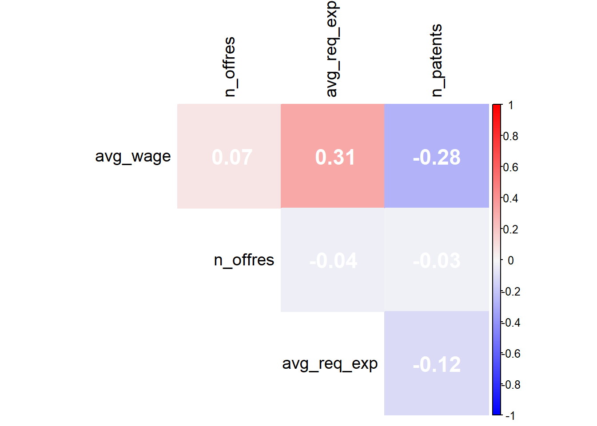

Économétrie
Nous allons à présent procéder à une analyse économétrique visant à explorer les déterminants du nombre de brevets déposés par les entreprises (n_patents).
Matrice de corrélation
Avant de procéder à une analyse économétrique, il est crucial de mener une analyse préliminaire des corrélations entre les variables afin de mieux comprendre leurs relations potentielles. En effet, cette étape d’analyse des corrélations constitue un préalable indispensable pour justifier les choix méthodologiques et s’assurer de la pertinence des variables dans les modèles économétriques.
La matrice de corrélation révèle une relation positive modérée (0.31) entre le salaire moyen (avg_wage) et l’expérience moyenne requise (avg_req_exp), indiquant que des salaires plus élevés sont généralement associés à des postes nécessitant davantage d’expérience. En revanche, une corrélation négative plus faible (-0.28) est observée entre le salaire moyen et le nombre de brevets déposés (n_patents), suggérant que les entreprises avec un grand nombre de brevets offrent en moyenne des salaires légèrement inférieurs. Enfin, les relations impliquant le nombre d’offres d’emploi (n_offres) sont très faibles, ce qui montre une quasi-indépendance entre cette variable et les autres. Globalement, seule la relation entre salaire moyen et expérience requise ressort clairement, tandis que les autres variables présentent des corrélations négligeables.
Analyse économétrique
Nous allons désormais passer à l’analyse économétrique. Pour cela, nous avons opté pour deux modèles de régressions linéaires : un modèle bivarié, où seule la relation entre le salaire moyen et le nombre de brevets est analysée, et un modèle multivarié, qui inclut également le nombre d’offres d’emploi publiées et l’expérience moyenne requise. Certaines variables ont été transformées en logarithme afin de mieux capturer les relations proportionnelles et de réduire l’impact des valeurs extrêmes présentes dans les données. Par exemple, le choix de log-transformer le nombre de brevets (n_patents), le salaire moyen (avg_wage) et le nombre d’offres (n_offres) repose sur l’hypothèse que les relations entre ces variables ne sont pas linéaires en valeur absolue, mais plutôt proportionnelles. Cette transformation permet également de faciliter l’interprétation des coefficients comme des élasticités, rendant les résultats économétriques plus intuitifs.
- : log_n_patentsi = β0 + β1 × log_avg_wagei + εi
- : log_n_patentsi = β0 + β1 × log_avg_wagei + β2 × log_n_offresi + β3 × avg_req_expi + εi
| Dependent variable: | ||
| log_n_patents | ||
| (1) | (2) | |
| log_avg_wage | -0.462** | -0.863*** |
| (0.206) | (0.299) | |
| log_n_offres | 0.040 | |
| (0.099) | ||
| avg_req_exp | -0.028 | |
| (0.039) | ||
| Constant | 5.087** | 9.377*** |
| (2.194) | (3.155) | |
| Observations | 162 | 87 |
| R2 | 0.031 | 0.117 |
| Adjusted R2 | 0.024 | 0.085 |
| Residual Std. Error | 1.008 (df = 160) | 0.853 (df = 83) |
| F Statistic | 5.034** (df = 1; 160) | 3.658** (df = 3; 83) |
| Note: | p<0.1; p<0.05; p<0.01 | |
Dans le modèle (1), seul le salaire moyen (log_avg_wage) est inclus comme variable explicative. Le coefficient associé à cette variable est significatif à un niveau de 5 % et indique une relation négative (-0,462). Cela signifie qu’une augmentation de 1 % du salaire moyen est associée à une diminution de 0,462 % du nombre de brevets déposés, toutes choses égales par ailleurs. Cette relation négative peut être interprétée de plusieurs manières. D’une part, elle pourrait refléter que les entreprises en phase de démarrage ou dans les premières étapes de leur cycle de vie tendent à être particulièrement innovantes. Ces start-ups ou jeunes entreprises cherchent souvent à se démarquer en déposant un grand nombre de brevets. Cependant, elles disposent généralement de ressources financières limitées, ce qui se traduit par des salaires relativement modestes en comparaison avec des entreprises plus matures. D’autre part, cette relation pourrait également indiquer que les entreprises très innovantes, qui déposent davantage de brevets, allouent une part importante de leurs ressources à la recherche et développement (R&D) plutôt qu’à l’attractivité salariale. Ces entreprises privilégieraient ainsi l’investissement stratégique dans l’innovation, ce qui pourrait expliquer cette corrélation négative.
Le modèle (2) enrichit l’analyse en ajoutant deux nouvelles variables explicatives : le logarithme du nombre d’offres publiées (log_n_offres) et l’expérience moyenne requise (avg_req_exp). Dans ce modèle, le coefficient du salaire moyen reste négatif (-0,880) et devient encore plus significatif (p < 0,01). Cependant, les deux nouvelles variables ne sont pas statistiquement significatives. Cela suggère que ni le nombre d’offres publiées ni l’expérience moyenne requise ne jouent un rôle déterminant dans l’explication du nombre de brevets déposés.
Enfin, les indicateurs de qualité des modèles, tels que le R² ajusté, restent relativement faibles (0,024 pour le modèle (1) et 0,088 pour le modèle (2)). Cela indique que les variables explicatives incluses expliquent une petite partie de la variation du nombre de brevets. Toutefois, le modèle (2) montre une légère amélioration par rapport au modèle (1), avec une meilleure capacité explicative globale.
En résumé, cette analyse met en évidence une relation significative et négative entre le salaire moyen et le nombre de brevets déposés. Cependant, les autres variables explicatives n’apportent pas d’évidence claire quant à leur impact. Ces résultats suggèrent que les entreprises qui déposent plus de brevets pourraient se concentrer sur des stratégies autres que l’attractivité salariale ou l’expérience des candidats pour stimuler leur innovation.